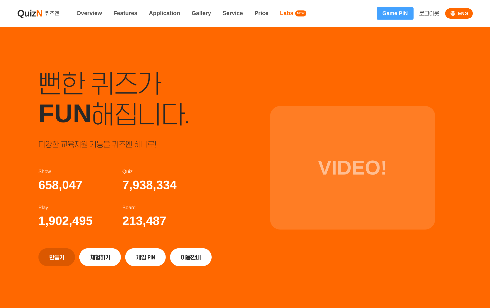
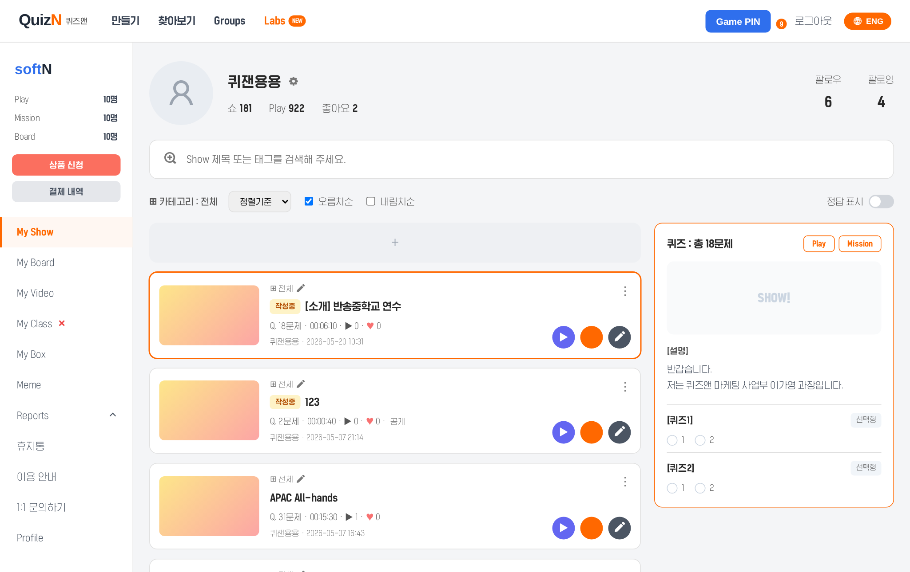
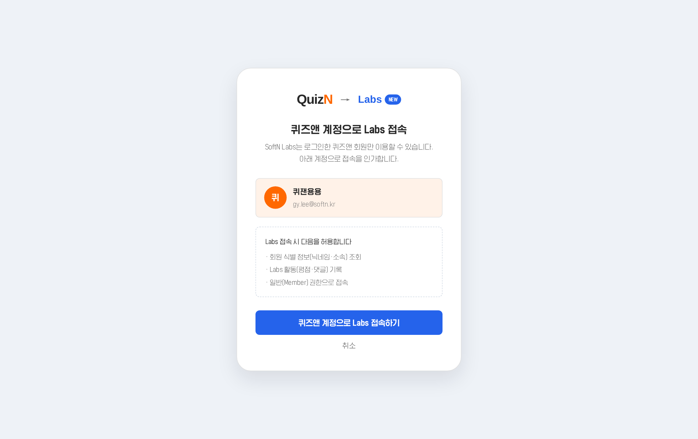
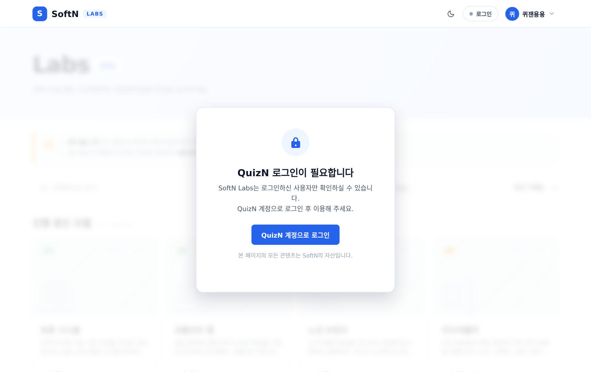
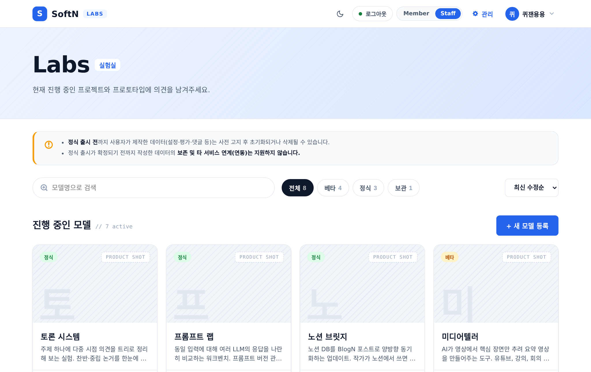
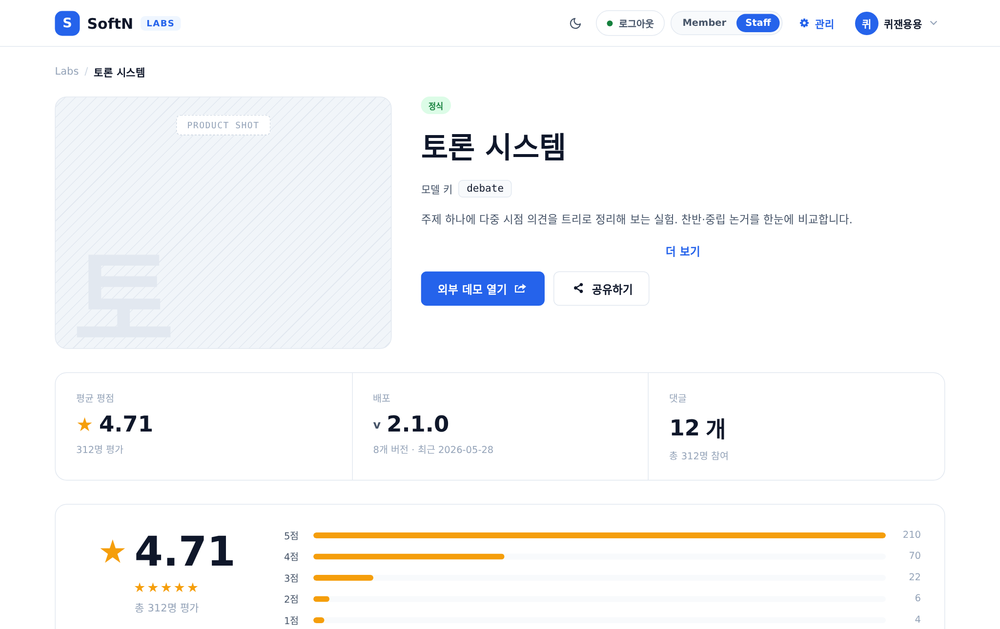
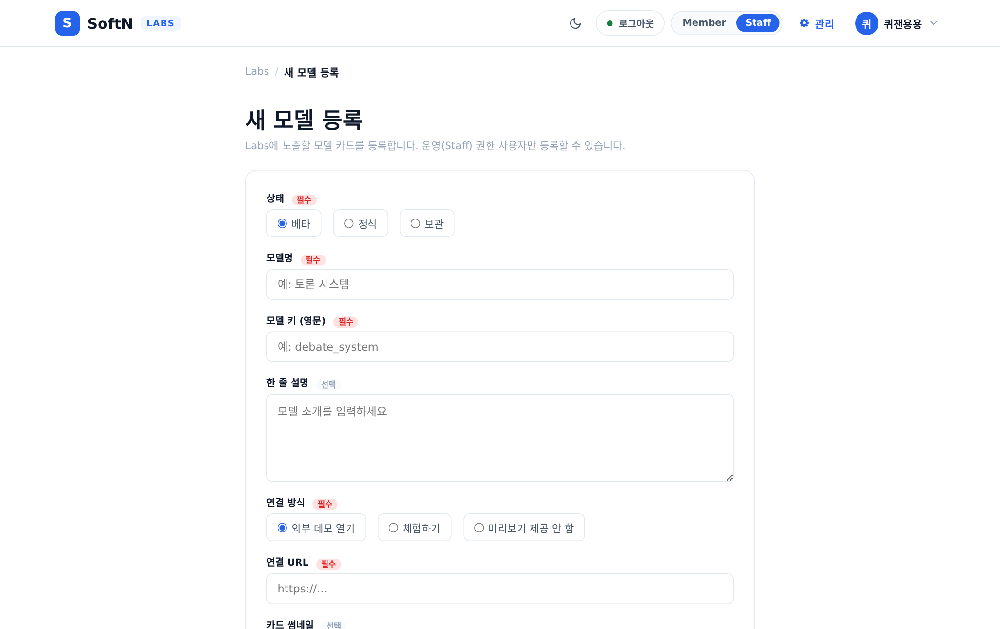
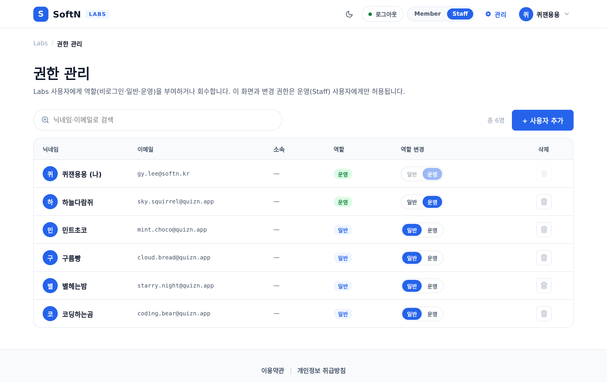

SoftN · QuizN 실험실 포털
SoftN Labs LABS
QuizN의 실험적 edu-tech 기능을 공개·검증하는 독립 포털. 파란 액센트 + 다크모드의 정적 HTML/CSS/JS 디자인 시안.
🌐 gylee209-oss.github.io/quizn-labs 📁 /Users/leegayeong/AX_Claude/quizn/labs/📋 프로젝트 개요
SoftN Labs는 QuizN의 실험적 기능·프로토타입을 모아 사용자 의견(평점·의견)을 받는 독립 포털이다. 기존 QuizN(민트/주황)과 별개의 파란 액센트 + 다크모드 디자인 시스템을 쓴다.
프레임워크 없이 vanilla JS + CSS 변수로만 구현하며, 로그인·권한·모델 등록을 localStorage 기반으로 시뮬레이션하는 정적 시안이다.
● 베타
● 정식
● 보관
ℹ
원래
boards/ 민트 앱셸 안의 단일 화면이었으나, 독립 포털로 재구성하며 labs/ 디렉토리로 분리되어 GitHub Pages에 단독 배포되었다.
📁 디렉토리 구조
quizn/
└── labs/ # SoftN Labs 배포 단위 (boards/에서 분리·이동)
├── labs.css # 디자인 시스템 (블루, 라이트/다크 토큰 + 공통 컴포넌트)
├── labs.js # 공유 모듈 (권한·모델·헤더·게이트·DOM 유틸)
├── colors_and_type.css # QuizN SHOW 토큰 (quizn-home·myshow·labs-auth 전용)
├── fonts/ # HGGGothicssi(브랜드) + fontello(아이콘)
├── index.html # 루트 → labs.html 리다이렉트
├── ★ labs.html # 모델 목록 (검색·필터·정렬·카드 8개 페이지네이션)
├── labs-detail.html # 모델 상세 (의견·평점분포·배포이력)
├── labs-write.html # 모델 등록·수정 (Staff 전용)
├── labs-admin.html # 권한 관리 (Staff 전용)
├── quizn-home.html # QuizN 메인 (비로그인 진입점, SHOW 주황)
├── myshow.html # My Show (로그인 후, GNB에 Labs 진입)
└── labs-auth.html # QuizN 계정으로 Labs 접속 인가 화면
⚠
분리 시
colors_and_type.css가 누락되면 quizn-home·myshow·labs-auth의 SHOW 주황 테마가 깨진다. 이 3개 페이지가 참조하므로 반드시 labs/에 포함해야 한다. (board-common.css는 Labs가 안 써서 불필요.)
🗺 IA · 정보 구조 (GitHub 기준)
사이트맵
[진입 · QuizN 본체]
quizn-home.html 메인(비로그인) → myshow.html My Show(로그인) → labs-auth.html 계정 인가
[Labs 포털] index.html → labs.html 리다이렉트
labs.html 모델 목록 · member · 검색·필터·정렬·카드8
├ labs-detail.html?model= 상세 · member · 통계·평점·탭
├ labs-write.html 모델 등록·수정 · staff · ?edit=
└ labs-admin.html 권한 관리 · staff · 닉네임·이메일·삭제·추가
labs-md.html 프로젝트 문서
[전역 요소] 헤더 · 게이트(guest) · 푸터 · localStorage(5키)
[권한 레이어] guest(게이트) · member(열람·댓글·평점) · staff(+등록·관리·수정·삭제)
페이지별 경로 · 권한 · 핵심 구성
| 페이지 | 경로 | 권한 | 핵심 구성 |
|---|---|---|---|
| QuizN 메인 | quizn-home.html | — | SHOW 히어로 · 통계 · CTA · GNB Labs |
| My Show | myshow.html | 로그인 | 로그인된 메인 · GNB "Labs[NEW]" → 인가 |
| 계정 인가 | labs-auth.html | 로그인 | quizn_account 표시 · "접속"→member |
| 리다이렉트 | index.html | — | → labs.html |
| 모델 목록 | labs.html | member | 검색·상태필터·정렬·카드 8개 페이지네이션 |
| 모델 상세 | labs-detail.html | member | 통계·평점분포·내평점·탭·데모버튼·댓글 |
| 모델 등록·수정 | labs-write.html | staff | 등록 폼 · ?edit= 수정 · 임시저장 |
| 권한 관리 | labs-admin.html | staff | 닉네임·이메일·소속·역할·역할변경·삭제·+추가 |
| 프로젝트 문서 | labs-md.html | — | 본 설계 문서 |
🎨 디자인 시스템 (labs.css)
블루 토큰 — 라이트 / 다크
- 모든 색상은 CSS 변수로만 참조. 하드코딩은
labs.css토큰 정의부에만. - 두 세트:
:root(라이트) /[data-mode="dark"](다크). FOUC 방지로<head>에서 즉시 적용. - 액센트는 파란
--accent: #2563eb(로고·뱃지·버튼·활성 필터·내 참여).
--accent
#2563eb · 파란 액센트
--star
#f59e0b · 별점 amber
--bg (라이트)
#ffffff / soft #f8fafc
--bg (다크)
#0f172a / elev #1e293b
/* 라이트 */
:root {
--accent: #2563eb; --bg: #ffffff; --bg-soft: #f8fafc;
--fg: #0f172a; --border: #e2e8f0; --star: #f59e0b;
}
/* 다크 */
[data-mode="dark"] {
--bg: #0f172a; --bg-elev: #1e293b;
--fg: #f1f5f9; --border: #334155;
}상태색 — 모델 라이프사이클
베타 · BETA
정식 · LIVE
보관 · ARCHIVED
- BETA
#f59e0b(amber) · LIVE#22c55e(green) · ARCHIVED#9ca3af(gray) - 각 상태는 연한 배경 + 진한 텍스트의 pill 뱃지. 목록 필터 칩(전체/베타/정식/보관)과 카드 뱃지에 공유.
- 보관(archived) 모델은 상세에서 별도 배너로 안내.
폰트
- Labs 본문:
system-ui, 'Noto Sans KR', sans-serif— QuizN 브랜드 폰트와 별개. - 진입 플로우(quizn-home·myshow·labs-auth): SHOW 테마라
HGGGothicssi(colors_and_type.css) 사용. - 아이콘: Fontello 아이콘 폰트 (
<i class="icon-*">). 다크토글만 인라인 SVG(Fontello에 moon/sun 글리프 없음).
🔐 권한 3단계
비로그인 guest
게이트 오버레이만 노출. 콘텐츠 접근 불가. 역할 전환 segment에서 제외(플로우로만 진입).
일반 member
모델 확인·의견·좋아요·평점 가능. new-post·"관리" 메뉴 숨김.
운영 staff
새 모델 등록(new-model), 헤더 "관리"(admin-link), 권한관리 화면, 등록모델 수정·삭제.
- 상태는
localStorage.labs_auth='guest' | 'member' | 'staff'. - 헤더의 Member/Staff 토글로 역할 전환(로그인 상태에서만). 권한관리 화면 segment는
['member','staff']만.
function isMember() { return getAuth() !== 'guest'; } // 멤버·스태프 공통
function isStaff() { return getAuth() === 'staff'; } // 운영/작성 권한🚪 QuizN 계정 인가 플로우
썸네일을 클릭하면 실제 화면이 새 탭으로 열립니다. (캡처: flow-shots/)
1

quizn-home
비로그인 첫 화면 · 만들기
2

myshow
로그인 후 · GNB "Labs"
3

labs-auth
계정 인가 "접속"
4

labs.html 🔒
비로그인 = 잠금 게이트
비로그인 상태로
labs.html을 직접 열면 게이트가 콘텐츠를 가립니다. ①~③ 인가 경로를 거쳐 labs_auth='member'가 되어야 목록이 열립니다.게이트 해제 후 목록·상세를 열람하고 의견·좋아요·평점을 남길 수 있습니다. 헤더의 Member/Staff 토글은 보이지만 새 모델 등록·관리 메뉴는 숨겨집니다.
1

labs.html
+ 새 모델 등록 · 헤더 "관리" 노출
2

labs-detail
등록 모델은 수정·삭제 가능
3

labs-write
새 모델 등록 · 수정 (STAFF)
4

labs-admin
권한 관리 (STAFF)
멤버 권한 전부에 더해 운영 기능이 열립니다 — 새 모델 등록(
labs-write), 헤더 "관리"(labs-admin), 등록 모델 수정·삭제. isStaff() = labs_auth==='staff'일 때만 노출됩니다.myshow.goLabs():quizn_account = {nick:'퀴잰용용', id:'quizn_yong'}를localStorage에 저장 후 labs-auth로 이동.labs-auth:quizn_account를 읽어 계정 표시 → "접속" 시labs_auth='member'설정 후 labs.html.quizn_account = {nick, id}는 계정 정체성 단일 소스 — 헤더 아바타/이름, 권한관리의 "나" 행으로 전파(없으면 기본 '퀴잰용용').
📄 페이지별 구성
★ labs.html 모델 목록
- 헤더(주입) + 히어로 + 컨트롤 바(검색·상태 필터 칩·정렬) + 모델 카드 그리드(4열).
VIEW_MODELS = customModels.concat(MODELS)— 등록 모델이 목록 상단에. 카드 8개씩 페이지네이션(PER_PAGE=8).- 카드: 상태 뱃지 + 썸네일(사선+PRODUCT SHOT+이니셜) + 모델명 + 설명 + 별점 + 외부링크. 클릭 →
labs-detail.html?model={key}. - 정렬: 최근 업데이트 / 평점순 / 참여 많은순 / 이름순.
| 모델 | key | 상태 |
|---|---|---|
| 토론 시스템 | debate | 정식 |
| 프롬프트 랩 | prompt_lab | 정식 |
| 노션 브릿지 | notion_bridge | 정식 |
| 미디어텔러 | media_teller | 베타 |
| DBMS 매니저 | dbms_manager | 베타 |
| 코드 아키오 | code_archio | 베타 |
| 보이스 메모 to 글 | voice_memo | 베타 |
| ERD 디자인 v2 | erd_v2 | 보관 |
labs-detail.html ?model={key}
- breadcrumb + 좌측 큰 썸네일 / 우측 상태·모델명·키 코드칩·설명·데모 버튼.
- 통계 3분할(호응도 / 배포 / 의견) + 평점 분포 막대 + 내 참여(별 클릭 입력).
- 탭: 의견(의견+별점·페이지네이션) · 공지 · 투표 · 배포 이력.
- 연결방식(link) 규칙:
none→데모 버튼 숨김 /trial→"체험하기" / 그 외→"외부 데모 열기". - 의견: 본인(
name==='나')만 수정(인라인)·삭제(showConfirm커스텀 모달).textContent조립(XSS 방지) + IMEisComposing가드. - Staff &&
isCustomModel→ 우상단 owner-actions(수정·삭제) 노출.
labs-write.html STAFF 등록 · 수정
- 제출 시
labs_custom_models에unshift. 작성 중 임시저장은labs_draft_new_model. ?edit={key}모드: 제목 "모델 수정" / 버튼 "수정 완료", 기존 평점·카운트 보존.
labs-admin.html STAFF 권한 관리
- 사용자 목록 + 역할 전환(member/staff). 본인 행은
quizn_account.nick + ' (나)'로 표시, 닉네임 검색 가능.
💾 상태 관리 & 공통 패턴
localStorage 상태 (페이지·새 탭 간 유지)
labs_auth # 권한 guest | member | staff
labs_theme # 라이트 | 다크 (head에서 FOUC 방지 즉시 적용)
quizn_account # {nick, id} — 계정 정체성 단일 소스
labs_custom_models # Staff가 등록한 모델 배열
labs_draft_new_model# 작성 중 임시저장
비로그인 게이트
- guest 상태에서 콘텐츠 위 오버레이: "QuizN 로그인이 필요합니다 / SoftN의 자산입니다" + 로그인 버튼.
- 헤더 로그인 토글 또는 진입 플로우로 member 전환 시 게이트 해제.
모델 조회 — 커스텀 + 기본 병합
function getModel(key) {
const customs = JSON.parse(localStorage.getItem('labs_custom_models') || '[]');
return customs.concat(MODELS).find(m => m.key === key); // 등록 모델 포함 조회
}
⚠
알려진 함정 — ①
[hidden]이 .btn{display:inline-flex} 등에 무력화됐던 버그 → 전역 [hidden]{display:none!important}로 해결. ② labs.js 브라우저 캐시 → 로드 시 ?v=20260617 쿼리 부착.
🚀 배포 — GitHub Pages
저장소 gylee209-oss/quizn-labs (public)
소스 main 브랜치 / 루트(/)
→ https://gylee209-oss.github.io/quizn-labs/
labs/내용을 새 저장소 루트로 push(.DS_Store제외) → 루트 접속 시index.html이labs.html로 자동 이동.- 사이트가 루트에 있어 Actions 워크플로우 불필요 — Pages를
main/root로 켜면 끝. - 재배포:
labs/수정 → 같은 방식으로 push하면 Pages 자동 재빌드.
⚠
토큰 — Fine-grained PAT는 "레포 생성(Administration)"과 "push(Contents:write)"가 별개 권한이고, "Only select repositories"면 새 레포가 범위 밖이라 push 403. Pages 활성화엔
Pages:write가 별도로 필요(없으면 웹 UI에서 직접). 가장 단순한 길은 Classic PAT(repo+workflow).
📐 개발 원칙
- 1프레임워크 없음Vanilla JS + CSS 변수만. React / Vue 금지.
- 2색상은 토큰으로만하드코딩은
labs.css토큰 정의부에만. 컴포넌트는var(--*)참조. - 3아이콘은 Fontello
<i class="icon-*">. 예외는 다크토글 인라인 SVG뿐. - 4XSS 방지 DOM 조립사용자 입력은
textContent로. 헤더/게이트 문자열에 동적 데이터 보간 금지. - 5상태는 localStorage권한·테마·계정·등록모델을 키로 유지. 목록↔상세·새 탭 일관.
- 6labs/ 자체 완결배포 단위는
labs/. 진입 플로우용colors_and_type.css포함 필수.
🛠 응답 투명성 — 사용 도구 고지
모든 답변 마지막에 실제 사용한 도구를 명시한다. 고지 형식:
─── 🛠 사용 도구 ───
- 에이전트: [이름] — [용도]
- 스킬: [이름] — [용도]
- MCP: [이름] — [용도]
- 플러그인: [이름] — [용도]
고지 바로 앞에 후속 질문 4개(확인 2 / 제안 2)를 한 섹션으로 통합 제시한다.
이 프로젝트에서 자주 쓰는 도구
| 종류 | 이름 | 용도 |
|---|---|---|
| 스킬 | anthropic-skills:quizn-design-system | QuizN 디자인 시스템 참조 · HTML 시안 생성 |
| 에이전트 | code-reviewer | 코드 작성 후 품질 검토 |
| 에이전트 | planner | 다단계 작업 계획 수립 |
| MCP | mcp__Claude_Preview__* | 브라우저 미리보기 · 스크린샷 검증 |
| MCP | github (원격 HTTP) | 저장소·이슈·PR·파일 조작 (재시작 후 활성화) |
고지 규칙
- 도구를 실제로 호출한 경우에만 포함. 로드만 한 도구는 제외.
- 내장 도구(Read·Edit·Write·Bash·Grep 등)는 고지 생략.
- 스킬을
Skill도구로 활성화한 경우 반드시 포함.